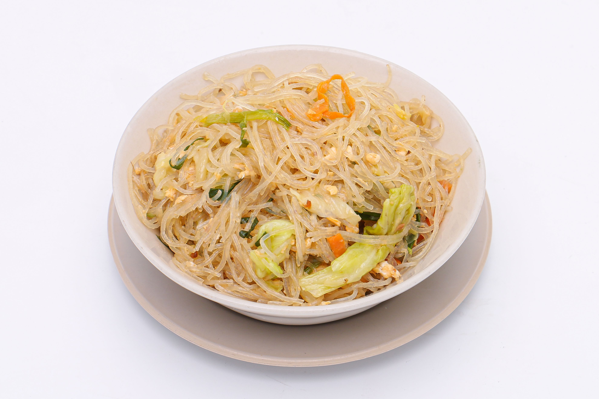

Mei Fun Recipe

Description
Mei Fun is originally from China and it’s a noodle made from rice and water.
While the main ingredients should be only rice and water, there are more variations with added flavors and colors.
This fragile noodle is made from rice flour and water in most cases and it’s dried in loose bundles.
Every dish that contains mei fun usually has a rich sauce, vegetables, and some kind of protein.
Ingredients
- 1 package of Mei Fun noodles
- 2 tablespoons of vegetable oil
- 1 cup of sliced vegetables (e.g., bell peppers, carrots, and snow peas)
- 1 cup of protein (e.g., chicken, shrimp, or tofu)
- 2 cloves of garlic, minced
- 2 tablespoons of soy sauce
- 1 tablespoon of oyster sauce (optional)
- Salt and pepper to taste
Steps
- Cook the Mei Fun noodles according to the package instructions. Drain and set aside.
- Heat the vegetable oil in a large pan or wok over medium-high heat.
- Add the minced garlic and sauté for about 30 seconds until fragrant.
- Add the sliced vegetables and protein of your choice. Stir-fry for 3-5 minutes until the vegetables are tender and the protein is cooked through.
- Add the cooked Mei Fun noodles to the pan and toss everything together.
- Pour in the soy sauce and oyster sauce (if using). Stir well to combine all ingredients.
- Season with salt and pepper to taste. Cook for an additional 1-2 minutes until everything is heated through.
- Serve hot and enjoy your delicious Mei Fun dish!
Back to Home